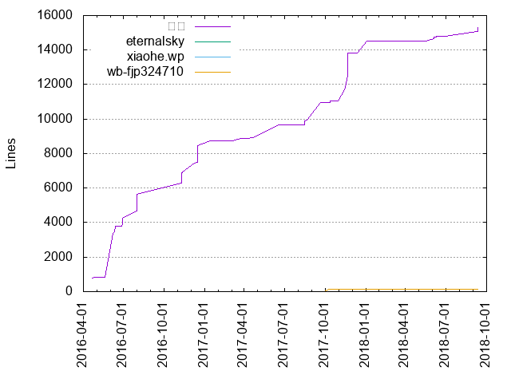
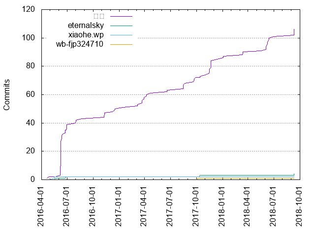

Authors
| Author | Commits (%) | + lines | - lines | First commit | Last commit | Age | Active days | # by commits |
|---|
| 光弘 | 106 (93.81%) | 15298 | 13108 | 2016-04-21 | 2018-09-11 | 873 days, 3:41:51 | 51 | 1 |
| eternalsky | 4 (3.54%) | 1 | 1 | 2016-05-20 | 2018-09-11 | 844 days, 14:30:08 | 4 | 2 |
| xiaohe.wp | 2 (1.77%) | 23 | 8 | 2016-05-17 | 2016-05-17 | 2:46:06 | 1 | 3 |
| wb-fjp324710 | 1 (0.88%) | 121 | 103 | 2017-10-10 | 2017-10-10 | 0:00:00 | 1 | 4 |


| Month | Author | Commits (%) | Next top 5 | Number of authors |
|---|
| 2018-09 | 光弘 | 5 (83.33% of 6) | eternalsky | 2 |
| 2018-06 | 光弘 | 10 (100.00% of 10) | | 1 |
| 2018-05 | 光弘 | 1 (100.00% of 1) | | 1 |
| 2018-03 | 光弘 | 3 (100.00% of 3) | | 1 |
| 2018-01 | 光弘 | 2 (100.00% of 2) | | 1 |
| 2017-12 | 光弘 | 1 (100.00% of 1) | | 1 |
| 2017-11 | 光弘 | 10 (100.00% of 10) | | 1 |
| 2017-10 | 光弘 | 2 (50.00% of 4) | wb-fjp324710, eternalsky | 3 |
| 2017-09 | 光弘 | 4 (100.00% of 4) | | 1 |
| 2017-08 | 光弘 | 5 (100.00% of 5) | | 1 |
| 2017-06 | 光弘 | 2 (100.00% of 2) | | 1 |
| 2017-04 | 光弘 | 3 (100.00% of 3) | | 1 |
| 2017-03 | 光弘 | 7 (100.00% of 7) | | 1 |
| 2017-01 | 光弘 | 1 (100.00% of 1) | | 1 |
| 2016-12 | 光弘 | 3 (100.00% of 3) | | 1 |
| 2016-11 | 光弘 | 4 (100.00% of 4) | | 1 |
| 2016-08 | 光弘 | 3 (100.00% of 3) | | 1 |
| 2016-07 | 光弘 | 1 (100.00% of 1) | | 1 |
| 2016-06 | 光弘 | 37 (97.37% of 38) | eternalsky | 2 |
| 2016-05 | xiaohe.wp | 2 (66.67% of 3) | eternalsky | 2 |
| 2016-04 | 光弘 | 2 (100.00% of 2) | | 1 |
| Year | Author | Commits (%) | Next top 5 | Number of authors |
|---|
| 2018 | 光弘 | 21 (95.45% of 22) | eternalsky | 2 |
| 2017 | 光弘 | 35 (94.59% of 37) | wb-fjp324710, eternalsky | 3 |
| 2016 | 光弘 | 50 (92.59% of 54) | xiaohe.wp, eternalsky | 3 |
| Domains | Total (%) |
|---|
| alibaba-inc.com | 109 (96.46%) |
|---|
| hotmail.com | 4 (3.54%) |
|---|